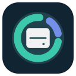

01
Увидеть главное
Крупные папки и файлы сразу наверху. Сканируйте домашнюю папку, весь Mac или отдельный каталог.

DiskLens СкачатьНайдите тяжёлые папки, загляните в детали
и поймите, что можно разобрать. С DiskLens для macOS.
macOS 14+ · Apple Silicon и Intel · Предварительная версия
МЕНЬШЕ ДОГАДОК, БОЛЬШЕ ЯСНОСТИ
Крупные папки и файлы сразу наверху. Сканируйте домашнюю папку, весь Mac или отдельный каталог.
Открывайте папки одним щелчком, переходите к объектам в Finder. Сохраняйте отчёт в JSON или текст.
Подключите Codex CLI, локальную команду или API. Просмотрите отчёт и отправьте его на анализ отдельной кнопкой.
СНАЧАЛА РАЗОБРАТЬСЯ
DiskLens читает размеры и другую информацию о файлах, не открывая их содержимое. Версия 0.1.0 ничего не удаляет.
Для замера ИИ не нужен. Если вы решите его подключить, отчёт с путями и размерами уйдёт выбранному провайдеру только после вашего действия.
Заглянуть в исходникиПЕРВЫЙ ЗАПУСК
Нативное приложение для macOS 14 и новее. Один архив для Apple Silicon и Intel.
Что входит в v0.1.0Загрузите ZIP-архив и перенесите DiskLens.app в папку «Программы».
Это предварительная сборка с ad-hoc подписью, без Developer ID и notarization. macOS может заблокировать первый запуск.
Если вы доверяете источнику, после попытки запуска откройте «Системные настройки → Конфиденциальность и безопасность» и разрешите открытие DiskLens. Не отключайте защиту macOS целиком.
Начните с нужного каталога. Системные разрешения macOS определяют, какие объекты доступны приложению.
В опубликованной версии 0.1.0 удаления нет. DiskLens помогает найти крупные объекты и понять, что стоит проверить. Кандидат на очистку не означает, что папку безопасно удалять целиком.
Нет. Сканирование, просмотр размеров, переход в Finder и экспорт работают локально. ИИ нужен только для дополнительных рекомендаций, если вы сами решите их запросить.
DiskLens считает выделенные блоки. APFS-клоны, снимки, сжатие и недоступные каталоги влияют на результат. Размер папки не равен объёму, который гарантированно освободится после удаления.
Пройдены тесты и release-сборка, проверены обе архитектуры в пакете и запуск окна на Apple Silicon. Запуск на Intel, Developer ID и notarization не проверены. Подробности и SHA-256 архива доступны в релизе.
DISKLENS ДЛЯ MACOS
Предварительная сборка с ad-hoc подписью. О первом запуске